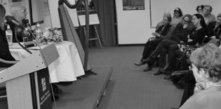

 מחוץ לקופסה ובחזרה: מסעות מנהיגות במקצועות הרפואה, הפסיכולוגיה והמשפטים 2014-04-10 בימת מנדל "מחוץ לקופסה ובחזרה" עסקה באופנים שבהם אפשר לפרוץ מעבר לגבולות המקובל בממסד המקצועי ולשלב רעיונות חדשים בפרקטיקה המקצועית המקובלת קישור חיצוני: מחוץ לקופסה ובחזרה: מסעות מנהיגות במקצועות הרפואה, הפסיכולוגיה והמשפטים